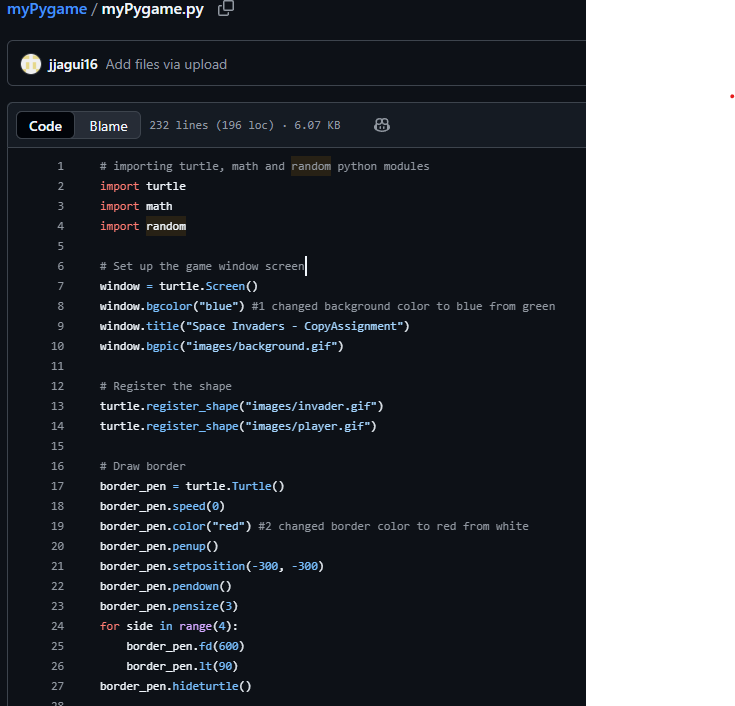
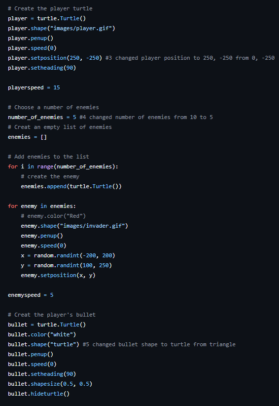

My Work
Here are some of the projects I have worked on during my studies and personal learning journey:
- Basic HTML About Me Page
- JavaScript Interactive To-Do List
- Third project
The following screenshots show of an early pythong project, the task was to demonstrate our code reading abilities as well as our understanding of macking changes to the code. In the comments you can see where the changes where made.

